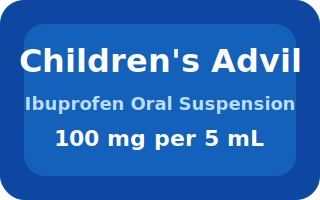

Use this quick reference to review common ibuprofen options for infants and children. Always double-check the
medication concentration and confirm dosing with your pediatrician or pharmacist.
Ibuprofen
Common Infant & Child Products
Infant's Motrin® Concentrated Drops (50 mg per 1.25 mL)

Children's Advil® Suspension (100 mg per 5 mL)
When to Use
Fever or pain in children 6 months and older.
Inflammation-related discomforts such as sprains.
As advised by your pediatrician after immunizations.
Safety Tips
Do not use in infants under 6 months unless directed by a doctor.